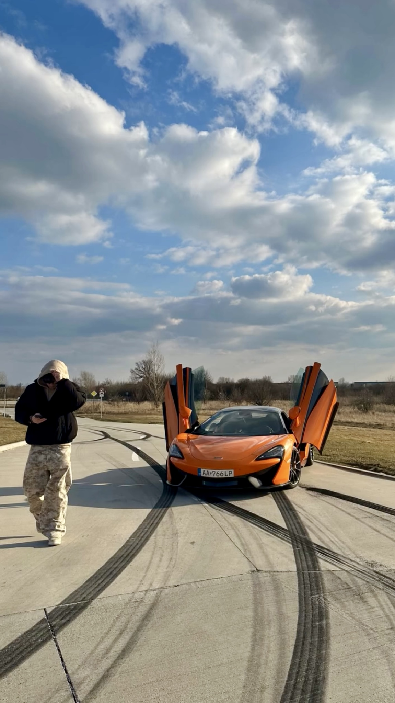

This website serves as my personal presentation of my studies at HZ University of Applied Sciences in Middelburg.
You can find more about HZ University on the official website.
Here are some reasons why ICT suits me:
